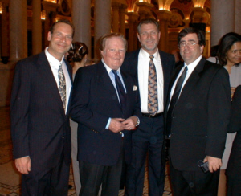

Gary Boyarsky spent more than 40 years as a Senior Technical Director at ABC News and ABC Sports, becoming one of the most decorated technical professionals in broadcast television history. Joining ABC in 1976, Gary worked on virtually every major news event and live production the network broadcast over four decades — from presidential elections to championship sporting events, from breaking news to historic anniversaries.
His career highlights include technical directing coverage of the September 11, 2001 attacks, the 50th and 60th anniversaries of D-Day from Normandy, Super Bowls, World Series telecasts, ABC's Good Morning America, Nightline, World News Tonight, and ABC's legendary Wide World of Sports. He worked alongside broadcast icons including Roone Arledge, Howard Cosell, Jim McKay, Frank Gifford, and Ted Koppel. In his later years at ABC, Gary oversaw the redesign of the New York Times Square Studios and led the network's transition to cloud playout systems. He retired in 2017 after 41 years of service.
Career Highlights
- Technical Director, Good Morning America — the most-watched morning news program
- Technical Director, Nightline with Ted Koppel
- September 11, 2001 — continuous live coverage from ABC News headquarters
- D-Day 50th & 60th Anniversaries — live coverage from Normandy, France
- Multiple Super Bowl broadcasts
- Presidential elections and inauguration coverage across multiple administrations
- New Year's Rockin' Eve — Times Square broadcasts for over 20 years
- ABC Wide World of Sports — technical direction with Howard Cosell & Jim McKay
- Oversaw Times Square Studio redesign and cloud playout conversion
- 41-year career at ABC/Disney, retiring 2017
